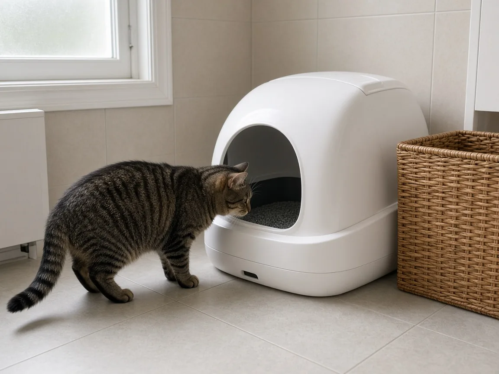

Litière automatique chat appartement : comment bien choisir en 2026

En appartement, la litière n’est jamais loin : à quelques mètres du canapé, de la cuisine ou du lit. Une litière automatique pour chat d’appartement peut vraiment changer le quotidien : moins d’odeur, plus de corvée de ramassage chaque jour : à condition de choisir un modèle adapté à ton logement et à ton chat. Ce guide passe en revue les quatre critères qui comptent en intérieur (bruit, odeur, taille, Wi-Fi), compare trois modèles réels et t’aide à estimer le coût d’usage. Nous n’affichons pas de prix précis : ils changent souvent, vérifie-les sur la page du vendeur.
Une litière automatique en appartement : pour qui ?
- Oui si ton chat est adulte (pas de chaton), en bonne santé, plutôt tranquille, et si l’odeur de litière gêne dans un logement sans grande pièce dédiée.
- Oui si tu as deux chats ou de longues journées d’absence : le bac reste propre entre deux passages.
- Plutôt non si ton chat est très craintif, si tu ne peux pas dégager un emplacement d’environ 60 × 60 cm près d’une prise, ou si le budget est serré : un bac classique bien entretenu reste une solution honnête.
Les 4 critères à vérifier en appartement
1. Le bruit
Chaque cycle de nettoyage fait tourner un globe ou un tambour pendant une à deux minutes. Les fabricants publient peu de mesures comparables ; méfie-toi des chiffres de décibels non sourcés. En pratique, regarde surtout : le délai réglable avant nettoyage (le chat ne doit pas être surpris), un mode nuit / ne pas déranger qui suspend les cycles sur une plage horaire, et la stabilité de l’appareil sur un sol dur (pas de tapis épais, qui fausse aussi les capteurs de poids).
2. L’odeur
Le principal intérêt en intérieur : les agglomérats partent dans un tiroir fermé après chaque passage. Mais c’est ce tiroir qui sent s’il déborde. Vérifie sa capacité, le type de sac (standard ou propriétaire), la présence d’un filtre ou d’un désodorisant, et utilise une litière agglomérante compatible. Évite les parfums trop forts : beaucoup de chats les fuient.
3. La taille et l’encombrement
Une litière automatique est bien plus grande qu’un bac. Mesure la hauteur disponible (sous une fenêtre ou un plan de travail), la profondeur avec la place pour sortir le tiroir, l’espace devant l’entrée et la prise électrique la plus proche. Un modèle bas ou ouvert se loge plus facilement dans un studio.
4. Le Wi-Fi et l’application
Les modèles connectés fonctionnent presque tous en Wi-Fi 2,4 GHz uniquement : si ta box n’émet qu’un réseau mixte, il faudra parfois activer une bande séparée. L’application sert à régler le délai et le mode nuit, à recevoir une alerte quand le tiroir est plein, et à suivre le nombre de passages et le poids du chat. Un changement net de fréquence est un signal à montrer au vétérinaire.
Comparatif : 3 litières automatiques adaptées à l’appartement
| Litter-Robot 4 | PetKit Pura Max 2 | Neakasa M1 | |
|---|---|---|---|
| Format | Globe fermé, haut | Fermé, bas et large | Ouvert (sans toit) |
| Hauteur (environ) | 75 cm | 55 cm | 51 cm (prévoir ~70 cm libres selon la marque) |
| Entrée | Très large (~40 × 40 cm) | Plus étroite (~25 × 20 cm) | Ouverte, accès par le dessus |
| Poids du chat (auto) | À partir de 1,36 kg selon le manuel | 1,5 à 8 kg, plus de 6 mois | 1 à 15 kg selon la marque |
| Application | Whisker, Wi-Fi 2,4 GHz | PetKit, Wi-Fi 2,4 GHz | Neakasa, Wi-Fi 2,4 GHz |
| Point fort en appart | Grands chats, multi-chats, suivi détaillé | Compacte en hauteur, désodorisant | Moins imposante, rassure les chats qui fuient les espaces fermés |
| Point faible | Hauteur, prix | Entrée étroite pour un gros gabarit | Projections de litière moins contenues |
Données issues des fiches et manuels des fabricants ; elles peuvent varier selon les versions. Vérifie toujours la fiche du modèle exact avant d’acheter.
Litter-Robot 4 (Whisker) : si tu as la hauteur
La référence pour un grand chat ou un foyer multi-chats : très grande entrée, capteurs laser, application complète, et sacs standards acceptés selon la marque. En appartement, sa hauteur d’environ 75 cm impose un emplacement dédié (salle de bain, entrée). Notre duel Litter-Robot 4 vs PetKit Pura Max 2 détaille la comparaison.
Voir sur AmazonPetKit Pura Max 2 : le compromis compact
Plus basse, avec désodorisant intégré et mode « ne pas déranger » dans l’application. Bon choix pour un chat de taille moyenne dans un logement où la hauteur manque. Son entrée plus étroite est à vérifier pour un gros gabarit.
Voir sur AmazonNeakasa M1 : l’alternative ouverte
Sans toit, elle paraît moins massive et convient aux chats qui refusent les litières fermées. La marque annonce un mode chaton et des capteurs infrarouges et de poids qui arrêtent le cycle. Contrepartie : un peu plus de projections, d’où l’intérêt d’un tapis. Vérifie le type de litière recommandé (agglomérante minérale de préférence).
Voir sur AmazonCoût d’usage : le vrai budget sur 2 ou 3 ans
- Sacs : standards (Litter-Robot 4, selon Whisker) ou propriétaires (PetKit, Neakasa) : compare le prix au mois.
- Filtres et désodorisants : cartouches, filtres à charbon, recharges de spray selon les modèles.
- Litière : une litière agglomérante de bonne qualité ; le tamisage automatique réduit souvent le gaspillage par rapport à un bac ramassé à la main.
- Électricité : faible, mais l’appareil reste branché en permanence.
Fais le calcul avant d’acheter : sur deux ou trois ans, les consommables peuvent représenter une part importante du prix d’achat.
Où la placer dans un appartement ?
- Salle de bain : sol dur, ventilation, souvent le meilleur choix si la porte reste accessible au chat.
- Entrée ou couloir : bien si une prise est proche et le passage modéré.
- À éviter : à côté des gamelles ou de la fontaine, dans un placard non aéré, au pied du lit, ou sur un tapis.
- Laisse de l’espace autour (certaines marques déconseillent de coller l’appareil au mur) et devant l’entrée.
Réussir la transition
Installe l’appareil éteint à côté de l’ancien bac avec un peu de litière usagée, laisse le chat l’explorer quelques jours, puis active les cycles avec un délai long. Garde le bac classique tant que l’adoption n’est pas complète, et observe les premiers cycles.
Notre avis
Pour la plupart des chats d’appartement, la PetKit Pura Max 2 est le compromis le plus facile à loger. Avec un grand chat et de la hauteur disponible, le Litter-Robot 4 reste la référence. Si ton chat fuit les espaces fermés, regarde une litière ouverte comme la Neakasa M1. Pour aller plus loin : notre sélection des meilleures litières automatiques 2026 et notre guide litière automatique en petit appartement (studio, bruit, odeurs).
Pas sûr qu’une litière automatique soit ta priorité ? Vois notre panorama des objets connectés pour chat, ou fais d’abord notre audit gratuit en 1 jour, puis vérifie chaque achat avec la checklist shopping du chat connecté ou suis le plan en 7 jours (produits payants via Gumroad).
Un chat qui se met soudain à éviter sa litière ou à y aller beaucoup plus souvent doit être vu par un vétérinaire.
Liens affiliés Amazon : une commission peut être versée, sans surcoût pour toi.